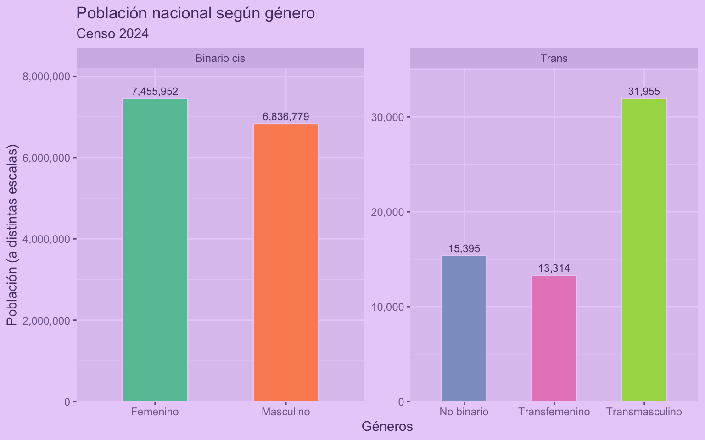
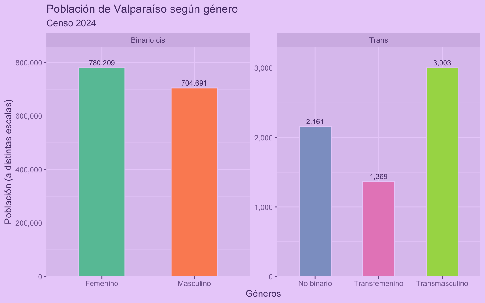
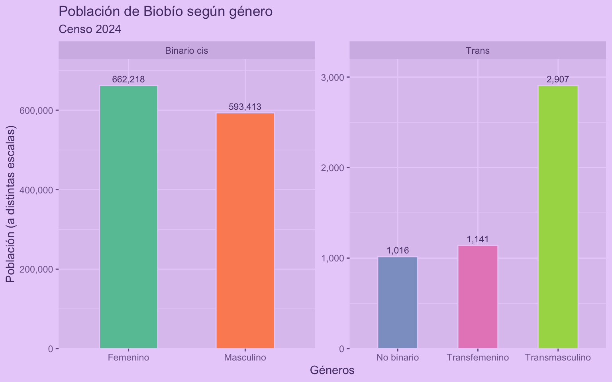
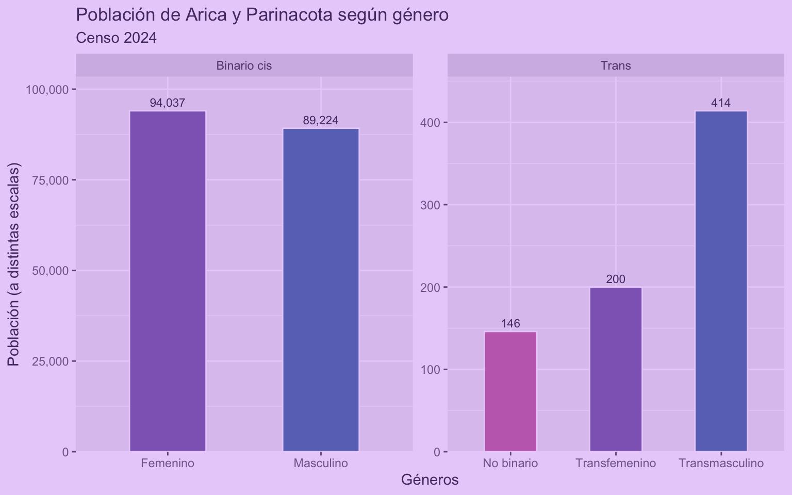
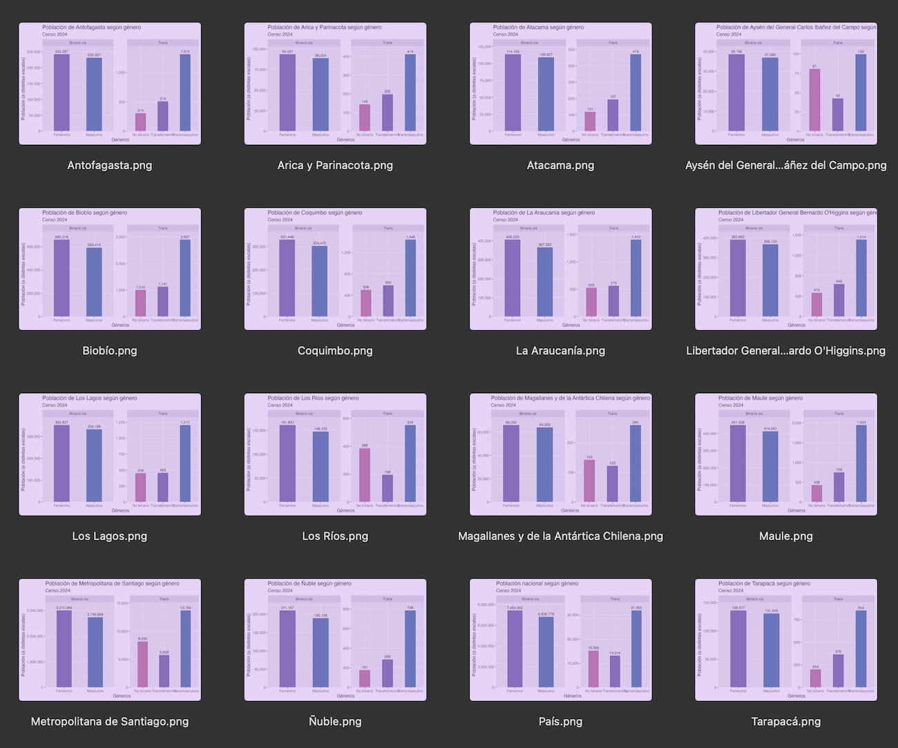

Cómo dejar de repetirte y escribir código más eficiente en R
Este script enorme podría haber sido un `for` loop
18/2/2026
El otro día me llegó un script (muy probablemente hecho por una IA) de más de 9.000 líneas!
Igual era entendible, porque era un script que producía cientos de gráficos. Pero revisando el script me doy cuenta de que también se repiten cientos de veces los mismos patrones de código.
Scripts como éstos suelen ser apenas una docena de bloques de código distintos, pero repetidos muchas veces cada uno con mínimas diferencias entre ellos: referencias a columnas distintas, etc.
Esa extensión y ese nivel de repetición hizo que modificar el script para mejorar los gráficos, que en teoría eran un puñado de visualizaciones repetidas muchas veces, fuera un enorme dolor de cabeza.
Al tiro pensé: Este script enorme podría haber sido un for loop 😂
¿Qué tiene de malo la repetición?
- Produce scripts difíciles de revisar y entender, porque son tan eternos que no puedes contenerlos en tu cabeza 🤕
- Es código difícil de mantener, porque si quieres hacer un cambio, vas a tener que aplicarlo infinitas veces de forma manual 😫
- Producen problemas a largo plazo, porque puede ser que aparezca un error en el código y vas a tener que bucear 🐠 entre miles de líneas para encontrarlo
Aquí dejo algunos consejos para escribir código más eficiente, más fácil de entender, y más fácil de mantener.
Separar un script en partes
Si tienes un script muy largo, lo primero que puedes hacer es separar el script en varias partes, y cada parte ponerla en un archivo distinto.
Si un script requiere que se ejecute otro, puedes agregar source() para que dentro de un script se ejecute otro script.
Por ejemplo, en un script pones todo el código de la carga de datos, en otro pones las funciones que usarás, y el tercer script lo empiezas con source("cargar.R") y source("funciones.R").
Entonces pasas desde esto:
script_enorme.R
A esto:
cargar.Rfunciones.Rpruebas.Rgráficos.R
Entonces, si necesitas cambiar algo en la carga de datos, vas al script correspondiente y lo arreglas!
Otra opción es tener todo en scripts separados, y luego tener un script principal que ejecute todos los pasos necesarios con source(), una especie de orquestador de todos los pasos de tu proyecto. En estos casos se recomienda anteceder los scripts con una numeración para registrar el orden de los pasos.
Crear funciones
Si tienes un bloque de código que se repite muchas veces, lo mejor es convertirlo en una función, y luego llamar a esa función cada vez que necesites ejecutar ese bloque de código.
Por qué usar funciones?
- Permiten ordenar el código, porque esconden la complejidad del código dentro de la función, dejando sólo lo necesario a la vista: pasas de muchas líneas de código a una función con un nombre que describa lo que hace
- Permiten reutilizar código, porque una vez que creas la función, puedes usarla las veces que quieras sin tener que copiar y pegar el mismo bloque de código
- Te ayudan a mantener el código, porque si después necesitas hacer un cambio o corrección, la haces en un sólo lugar, y ese cambio se va a aplicar a todas las veces que uses la función
Pongámonos en el caso de que vamos a procesar los resultados del Censo de población y vivienda 2024 de Chile, y cargamos los datos sobre población según género:
library(readxl)
library(dplyr)
library(janitor)
library(tidyr)
# cargar datos
genero <- read_xlsx("P5_Genero.xlsx", sheet = 2)
# limpiar y procesar
genero_long <- genero |>
row_to_names(3) |>
pivot_longer(cols = 4:last_col(),
names_to = "genero",
values_to = "poblacion") |>
select(region = 2, genero, poblacion) |>
mutate(poblacion = as.numeric(poblacion)) |>
mutate(tipo = case_when(genero %in% c("Masculino", "Femenino") ~ "Binario cis",
genero %in% c("No binario", "Transfemenino", "Transmasculino") ~ "Trans",
TRUE ~ "Otros")) |>
filter(tipo != "Otros")
genero_long
# A tibble: 95 × 4
region genero poblacion tipo
<chr> <chr> <dbl> <chr>
1 País Masculino 6836779 Binario cis
2 País Femenino 7455952 Binario cis
3 País Transmasculino 31955 Trans
4 País Transfemenino 13314 Trans
5 País No binario 15395 Trans
6 Arica y Parinacota Masculino 89224 Binario cis
7 Arica y Parinacota Femenino 94037 Binario cis
8 Arica y Parinacota Transmasculino 414 Trans
9 Arica y Parinacota Transfemenino 200 Trans
10 Arica y Parinacota No binario 146 Trans
# ℹ 85 more rows
Ahora que tenemos los datos por región y género, procedemos a visualizar los datos:
library(ggplot2)
Warning: package 'ggplot2' was built under R version 4.4.3
# visualizar
genero_long |>
filter(region == "País") |>
ggplot(aes(x = genero, y = poblacion, fill = genero)) +
geom_col(width = 0.5, color = "#EAD2FA") +
geom_text(aes(label = scales::comma(poblacion)),
position = position_dodge(width = 0.9),
vjust = -0.5,
size = 3) +
scale_fill_brewer(type = "qual", palette = "Set2") +
scale_y_continuous(labels = scales::comma,
expand = expansion(mult = c(0, 0.1))) +
scale_x_discrete(labels = label_wrap_gen(15)) +
facet_wrap(~tipo, scales = "free") +
guides(fill = guide_none()) +
theme_grey(ink = "#553A74",
paper = "#EAD2FA",
accent = "#9069C0") +
labs(title = "Población nacional según género",
subtitle = "Censo 2024",
x = "Géneros", y = "Población (a distintas escalas)")

Pero imaginemos que ahora queremos hacer el mismo gráfico varias veces. ¿Copiamos el bloque del gráfico y lo pegamos las veces que lo necesitemos? NO! 😡
En vez de repetir el código, copiamos el código y creamos funciones para ordenarlo y hacerlo más manejable:
# función para cargar datos
censo_cargar_genero <- function(archivo = "P5_Genero.xlsx") {
read_xlsx(archivo, sheet = 2)
}
# función para procesar datos
censo_procesar_genero <- function(genero) {
genero |>
row_to_names(3) |>
pivot_longer(cols = 4:last_col(),
names_to = "genero",
values_to = "poblacion") |>
select(region = 2, genero, poblacion) |>
mutate(poblacion = as.numeric(poblacion)) |>
mutate(tipo = case_when(genero %in% c("Masculino", "Femenino") ~ "Binario cis",
genero %in% c("No binario", "Transfemenino", "Transmasculino") ~ "Trans",
TRUE ~ "Otros")) |>
filter(tipo != "Otros") |>
filter(!is.na(region))
}
# función para visualizar datos
censo_grafico_genero <- function(genero_long,
filtro = "País",
titulo = "Población nacional según género") {
genero_long |>
filter(region == filtro) |>
ggplot(aes(x = genero, y = poblacion, fill = genero)) +
geom_col(width = 0.5, color = "#EAD2FA") +
geom_text(aes(label = scales::comma(poblacion)),
position = position_dodge(width = 0.9),
vjust = -0.5,
size = 3) +
scale_fill_brewer(type = "qual", palette = "Set2") +
scale_y_continuous(labels = scales::comma,
expand = expansion(mult = c(0, 0.1))) +
scale_x_discrete(labels = label_wrap_gen(15)) +
facet_wrap(~tipo, scales = "free") +
guides(fill = guide_none()) +
theme_grey(ink = "#553A74",
paper = "#EAD2FA",
accent = "#9069C0") +
labs(title = titulo,
subtitle = "Censo 2024",
x = "Géneros", y = "Población (a distintas escalas)")
}
Lo que hicimos fue simplemente meter las partes del código dentro de function() para crear funciones.
Ahora cuando necesitemos ejecutar esas partes del código, simplemente llamamos las funciones:
genero <- censo_cargar_genero()
genero_long <- censo_procesar_genero(genero)
censo_grafico_genero(genero_long,
filtro = "Valparaíso",
titulo = "Población de Valparaíso según género")

¡Mucho más breve y ordenado! 😍
Ahora podemos reutilizar la función para generar otro gráfico similar en tan sólo un par de líneas:
censo_grafico_genero(genero_long,
filtro = "Biobío",
titulo = "Población de Biobío según género")

En el fondo lo que hicimos fue esconder parte del código dentro de las funciones, despejando nuestro script.
Ahora, si queremos hacer algún cambio en el código, cambiamos la función que creamos y re-ejecutamos la función, y así el cambio se aplicará a las siguientes veces que ocupemos la función. Por ejemplo, cambiemos la paleta de colores:
Ver código de la función con cambios
# cambiamos la función, agregando el código nuevo dentro de ella
censo_grafico_genero <- function(genero_long,
filtro = "País",
titulo = "Población nacional según género") {
genero_long |>
filter(region == filtro) |>
ggplot(aes(x = genero, y = poblacion, fill = genero)) +
geom_col(width = 0.5, color = "#EAD2FA") +
geom_text(aes(label = scales::comma(poblacion)),
position = position_dodge(width = 0.9),
vjust = -0.5,
size = 3) +
# scale_fill_brewer(type = "qual", palette = "Set2") +
#### cambio en la función para cambiar paleta de colores
scale_fill_manual(values = c("Femenino" = "#9069C0",
"Masculino" = "#6974C0",
"No binario" = "#C46EBA",
"Transfemenino" = "#9069C0",
"Transmasculino" = "#6974C0")) +
####
scale_y_continuous(labels = scales::comma,
expand = expansion(mult = c(0, 0.1))) +
scale_x_discrete(labels = label_wrap_gen(15)) +
facet_wrap(~tipo, scales = "free") +
guides(fill = guide_none()) +
theme_grey(ink = "#553A74",
paper = "#EAD2FA",
accent = "#9069C0") +
#### cambio en la función para usar el filtro en el título
labs(title = paste("Población de", filtro, "según género"),
####
subtitle = "Censo 2024",
x = "Géneros", y = "Población (a distintas escalas)")
}
Ahora que actualizamos la función, al volver a usarla tendrá los cambios nuevos:
censo_grafico_genero(genero_long,
filtro = "Arica y Parinacota")

Hacer un loop o bucle
Otro caso de repetición es cuando tenemos que hacer una misma cosa muchas veces.
Siguiendo el ejeplo anterior, donde creamos una función, una opción es usar la función muchas veces:
censo_grafico_genero(genero_long, filtro = "Arica y Parinacota")
censo_grafico_genero(genero_long, filtro = "Tarapacá")
censo_grafico_genero(genero_long, filtro = "Antofagasta")
censo_grafico_genero(genero_long, filtro = "Coquimbo")
… y así hasta el infinito. Pero esto no es eficiente!
Lo mejor sería usar un loop o bucle, que es una estructura de código que permite repetir un bloque de código varias veces, cambiando alguna parte del código cada vez.
En este caso, el código repetido siempre es la misma función (o el bloque de código que genera el gráfico), y lo único que cambia son los argumentos que se le enrega a la función (la región a filtrar), así que podemos hacer un loop que ejecute varias veces el código, y en cada paso cambie el filtro:
# obtener vector con las regiones
regiones <- unique(genero_long$region)
Primero obtenemos un vector que contenga el valor que queremos que se use en cada paso del loop, y luego construimos el loop para que, por cada valor del vector (for (region in regiones)), ejecute el bloque de código que queremos repetir:
# hacer un loop para generar un gráfico por cada región
for (region in regiones) {
censo_grafico_genero(genero_long, filtro = region)
}
Con sólo esas pocas líneas, generamos gráficos para todas las regiones del país!

Conclusión
En resumidas cuentas, si aplicamos lo aprendido en este tutorial, lo que hicimos quedaría así:
source("funciones.R")
# cargar
genero <- censo_cargar_genero()
# procesar
genero_long <- censo_procesar_genero(genero)
# loop
for (region in unique(genero$regiones)) {
censo_grafico_genero(genero_long, filtro = region)
}
Hermoso. Elegante. Conciso. Reproducible. Una obra de arte 👌🏼
Quizás lo mejor que puedes hacer con tu código es hacerlo legible y no repetirte. Como hemos visto, lo mejor es separar el código en partes, crear funciones para ordenar el código y hacerlo más manejable, y usar loops para ejecutar un mismo código varias veces.
- Fecha de publicación:
- February 18, 2026
- Extensión:
- 9 minute read, 1796 words
- Tags:
- loops optimización consejos